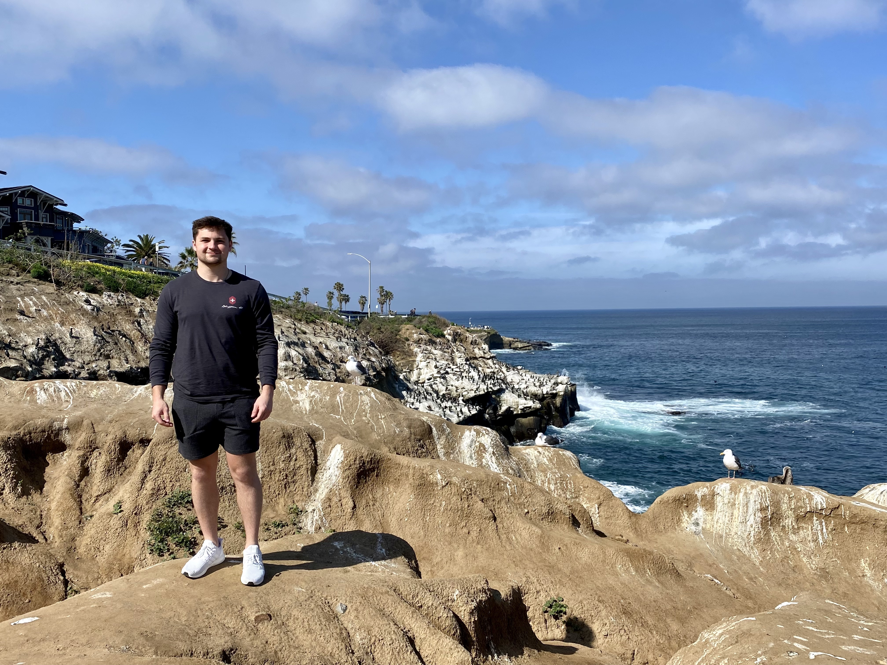

Contact Jacob
 >
>
jacobswansen22@gmail.com

About Jacob
One thing about me is that I enjoy watching and following sports. I like to follow college football, basketball, and baseball along with the NFL and MLB.
My favorite teams:
- Iowa Hawkeyes
- Boston Red Sox
- Indianapolis Colts
At the University of Iowa I have taken many classes. I am double majoring in finance and business analytics. I have also worked jobs and done extracurricular activities. Here are some classes and activities I've participated in.
| Finance Classes | Business Analytics classes | Required Classes | Extracurriculars/jobs |
| Wealth Management | Computational Thinking | Statistics | Phi Kappa Psi Fraternity |
| Corporate Finance | Digital Product Management | Introduction to Marketing | 30 Hop |
| Commercial Banking | Cloud Computing | Introduction to Management | Boys and Girls Club |
| Fixed Income Securities | Digital Product Management | Financial Management | Intramural Sports |
